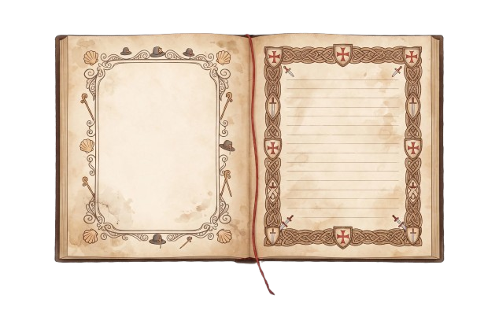
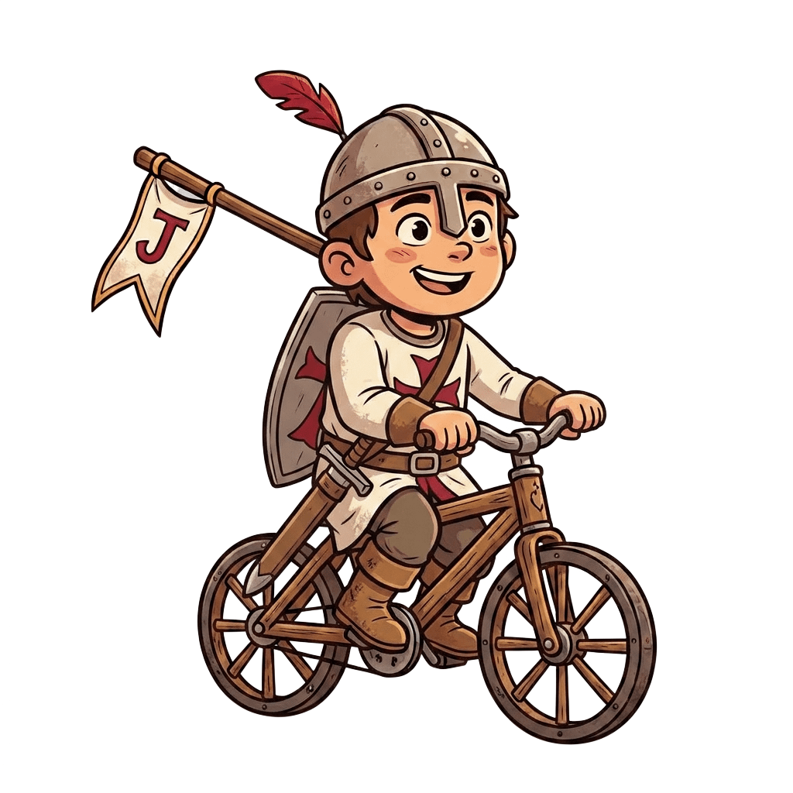
👆 Toca un punto del camino para descubrir su secreto
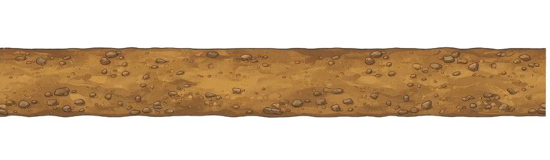
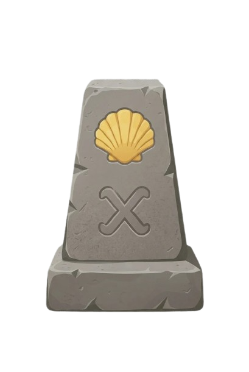
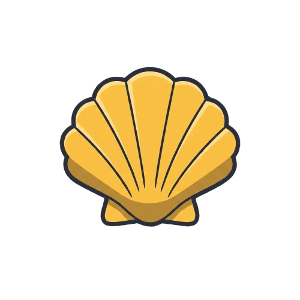
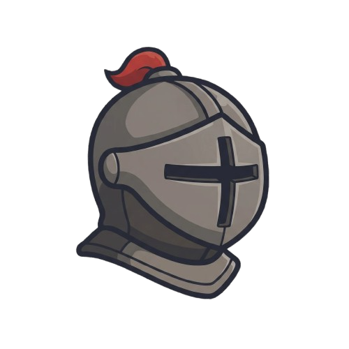
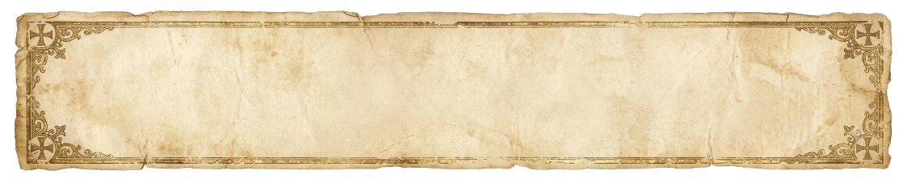
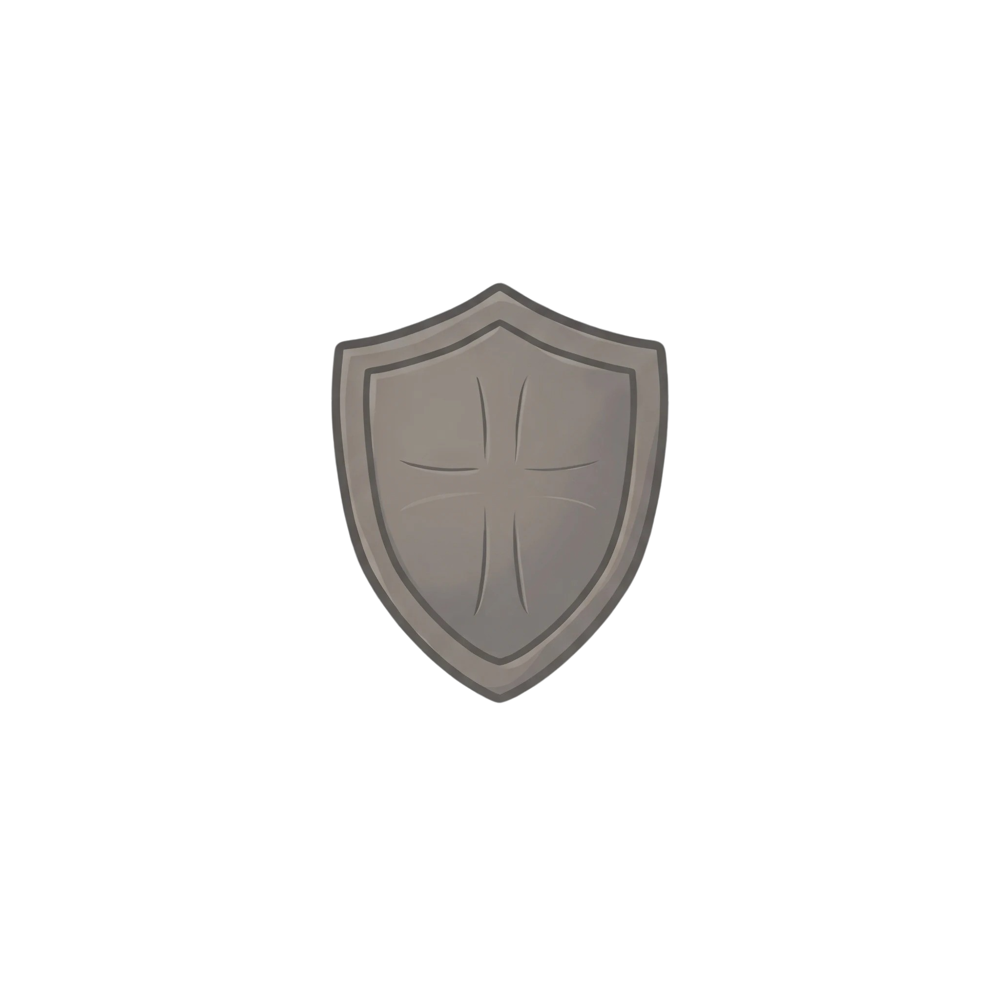
Encuentra la fuente del pueblo y bebe de ella. Según la leyenda, quien bebe tiene asegurado llegar a Santiago.
Antes de bajar a Hontanas, asómate al borde del barranco y cuenta cuántas casas puedes ver en el pueblo oculto.
Pasa en bici por debajo del arco gótico del Convento de San Antón y busca la letra Tau esculpida en sus piedras.
Cruza el puente medieval de Itero de la Vega y di en voz alta: "¡Escudero Julen ha entrado en Palencia!"
Da tres vueltas a la iglesia de San Martín de Frómista contando todas las figuras talladas en piedra del exterior.
Un helado o refresco bien frío en Frómista después de 67 km de meseta castellana bajo el sol. ¡Muy merecido, héroe!
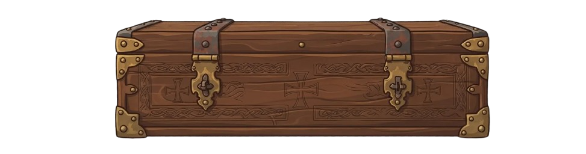
Credencial de Templario · Sellos de esta etapa
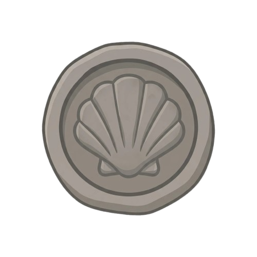
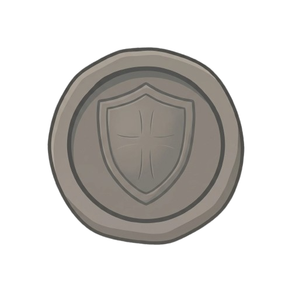
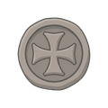
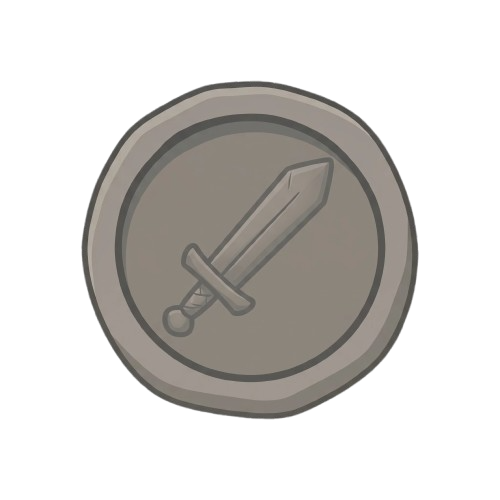
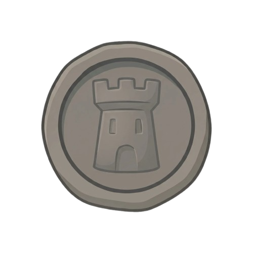
| Salida | Burgos, 8:00 h |
| Llegada prevista | Frómista, 13:30–14:00 h |
| Avituallamiento | Rabé, Hornillos, Hontanas, Castrojeriz, Itero y Boadilla |
| Tramos exigentes | Ninguno destacable — etapa de meseta |
| Alojamiento | Frómista — confirmar guardia de bicis |